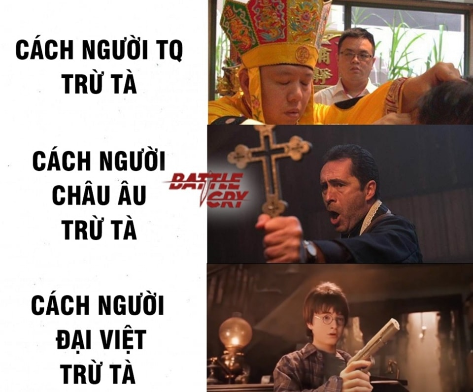

MỘT CAO NHÂN NGƯỜI NAM ĐỊNH ĐÃ TỪNG NÓI 🐧
Hẳn các bạn đã không còn lạ gì với những câu chuyện ma và linh dị ở nước ta thời xưa. Ngoài trừ tà và solo với thần ra, thì lịch sử cũng ghi nhận một số trường hợp mà tôi cũng không biết phải diễn tả cảm xúc thế nào cho chuẩn. Sách "Sơn Cư Tạp Thuật" của Đan Sơn viết vào cuối thế kỷ XVIII, có ghi lại câu chuyện "Nữ hoá nam" như sau: “Nước ta trong đời Bảo Thái, người phụ nữ xã Mộc Nhuận huyện Đông Sơn lấy chồng là Ưu Binh, sinh 2 con trai, mắc bệnh nhiều năm, bỗng 1 ngày chỗ ấy sưng phù đau nhức, rồi hoá thành hình hài trượng phu. Bố mẹ người ấy chỉ sinh được nữ, bèn tấu lên quan, cho xin người ấy về để có người thờ tự. Quan trên khám nghiệm thấy thật như vậy thì cho phép. Sau người ấy làm tổng tưởng. Cư sĩ Mộng Cúc từng cùng uống rượu, hỏi đùa: “chuyện vui vẻ chăn gối thì nam hay nữ hay hơn?” người kia chỉ cười mà chẳng đáp”.
Trích "Sơn Cư Tạp Thuật" Đan Sơn-1735
KẸO ĐỒNG: THỨ DUY NHẤT BÌNH ĐẲNG VỚI MỌI SINH LINH CỦA TAM GIỚI
Súng không chỉ là 1 thứ binh khí, súng đạn trong tâm thức người Việt còn có sức mạnh trấn áp những thế lực siêu nhiên tà ác, chẳng hạn những Thần Trùng (thần ác, chuyên tra khảo vong hồn người mới chết để họ chỉ dẫn người thân, để thần bắt hồn). Tang Thương Ngẫu Lục của Phạm Đình Hổ kể câu chuyện về vị huyện thừa (quan huyện) ham săn bắn. Một hôm sắp sửa tối, thấy có con chim to như con vịt, màu lông đỏ nhạt, từ trên trời mênh mang hạ xuống trên cái mả mới mà mổ. Trên cái mả đó vọng ra tiếng ma khóc, quan huyện thừa cắp súng bắn trúng. Con chim lập tức vỡ vụn, tiếng khóc cũng lập tức ngưng. Hôm sau có người con trai đang để tang sửa soạn lợn sữa lên công đường bái tạ. Huyện thừa ngạc nhiên hỏi tại sao. Người đó thưa rằng người thân chết gặp ngày trùng tang. Nhà y bị liền mấy cái tang. Hôm qua mơ thấy người cha quá cố giải thích rằng đó là do con Hung Sát làm cho khổ.
KHÔNG BIẾT NGÀY ẤY CÓ NƯỚC NÀO QUAN NGẠI KHÔNG NHỈ?
Thông qua ghi chép của người Phương Tây, chúng ta đã biết về một buổi tập luyện của quân đội các chúa. Thế nhưng đó không phải ấn tượng duy nhất của họ. Dù không phải là người đam mê hay yêu thích quân sự, chúng ta đều đã được nghe hay được xem một cuộc duyệt binh. Đây là cách nhanh nhất để các cường quốc quân sự khè lẫn nhau hoặc là đưa ra thông điệp cứng rắn.
Có thể các bạn chưa biết, ngay từ thời Trịnh Nguyễn, các cụ khi không có chiến sự vẫn có cách để khè lẫn nhau thông qua nghi thức tế cờ. Điều này đã gây ấn tượng mạnh cho người Phương Tây. Samuel Baron là một thương nhân mang trong mình hai dòng máu Việt - Hà Lan, làm việc cho công ty Đông Ấn Anh (EIC). Ông ta thuộc thế hệ những thương nhân, chính khách, giáo sĩ phương Tây đầu tiên đến Đại Việt vào thế kỷ 17 - 18 và để lại nhiều ghi chép về văn hóa - lịch sử quan trọng. Trong đó có quyển "Mô tả vương quốc Đàng Ngoài" có mô tả về lễ “Theckydaw (Tế kỳ đảo)” - lễ tế cờ thời Lê Trịnh thế kỷ 17 như sau: “Số lượng quân sĩ xuất hiện trong dịp này không dưới 80.000 người, kỷ luật cao, được huấn luyện tinh nhuệ về đao kiếm, giáo, súng… Đội kỵ binh vào khoảng 5.000 quân, binh khí phong phú với cung tên, kiếm và súng. Đội tượng binh gồm khoảng 250 chiến tượng được huấn luyện rất tốt, không biết sợ lửa và tiếng gầm của đại bác, bành trên lưng được sơn màu rất đẹp và có hai người ngồi điều khiển, mang theo súng hỏa mai và giáo. Số lượng trọng pháo không dưới 300 khẩu được sắp đặt chỉnh tề. Các quan lại, tướng lĩnh và người trong hoàng tộc ăn mặc sang trọng, khoác những bộ cánh làm bằng vải mịn màu đỏ thắm, đeo bài ngà vàng trước ngực (như cách người Âu chúng ta mang vòng), đội mũ làm bằng loại vải nói ở trên… làm cho phần trình diễn này trong buổi lễ thật ấn tượng. Đội vệ quân của Chúa trông thật vạm vỡ, nhiều kẻ cao đặc biệt, mang trang phục mũ áo tề chỉnh có cùng chất liệu với các quan, chỉ khác là chúng không đeo thẻ ngà. Mười chú ngựa quý và sáu con voi to của Chúa được trang điểm thêm với vàng và vải màu đỏ thắm, nổi trội hẳn so với phần còn lại. Ngoài ra còn có nhiều loại cờ quạt biển hiệu đủ màu sắc sặc sỡ, kèn, chiêng, trống giục xung trận… trông thật bắt mắt.” Well các bạn đã có câu trả lời cho việc tại sao nội chiến, mà không ai dám va rồi đấy.